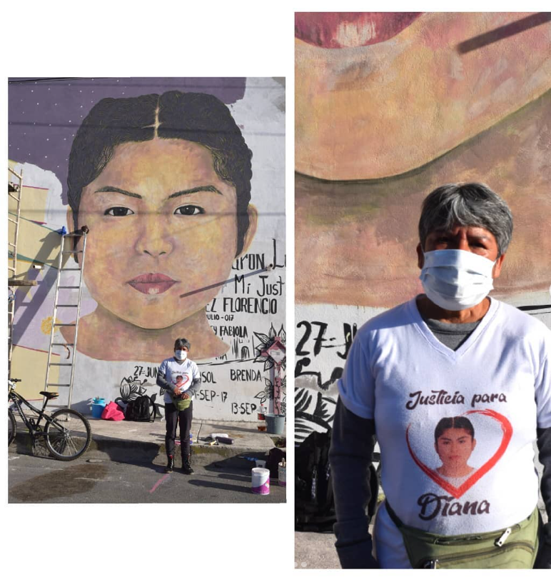
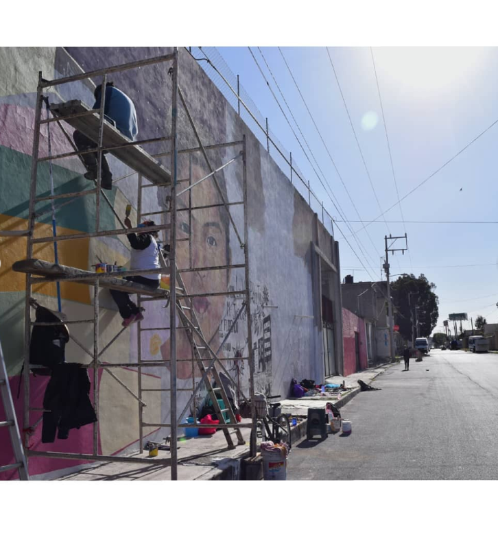

Por Teporingx
Audio tomado del documental: "Que se quede conmigo tu escencia" (2019) de cartografía de las resistencias Miralo aquí
Toda la semana del 16 de noviembre al 21, se realizaron diversas actividades de acompañamiento a Lidia Florencio en la realización del mural en memoria de Diana Velázquez Florencio, victima de feminicidio el 2 de julio del 2017 en Chimalhuacán Estado de México
Es en este municipio que de acuerdo a cifras oficiales en 2019 ocupaba el primer lugar en feminicidios del Edomex, a pesar de contar con la alerta de género desde el 2015.
El caso de Diana a quedado en la impunidad, con una justicia ausente y desvergonzada que solo obstruyo las evidencias y alento el proceso de busqueda; son las madres y familiares de las victimas quienes arman investigaciones y recuperan datos para formar evidencia de lo sucedido.
Ante la inacción y burocracia del estado complice y violentador de nuestras cuerpas, nos queda nombranos y resistir desde el acompañamiento, exigir y visibilizar las nulas acciones de un estado feminicida.
 Es de día y los carros no dejan de pasar, nosotras llegamos al lugar de las actividades después de cruzar Ecatepec y Neza, el sol es fuerte pero no impide que de inicio el taller de autodefensa. La compañera comienza explicando algunos parametros de seguridad, después entre todas hacemos algunos movimientos para poner en practica lo antes explicado, reimos pero también lo tomamos con seriedad, para todas estos movimientos significan un poco mas de seguridad, una manera de ponernos a salvo.
Siguen pasando personas, hombres, mujeres, niñxs, todos voltean a remiran que hacemos, que es eso que se esta pintando.
Mientras @la_malhablada_ el proyecto encargado de la realización del mural sigue poniendo pintura acá y allá, observo el detalle y el realismo con el que realizan el mural, en parte es una forma de hacer memoria, ocupar el espacio público y visibilizar las historias que el estado tiene olvidadas.
Gracias a las compas @rudaschima por resistir y el acompañamiento.
Atribución-NoComercial-Compartir Igual 4.0 Internacional(CC BY-NC-SA 4.0)